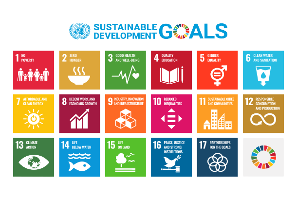
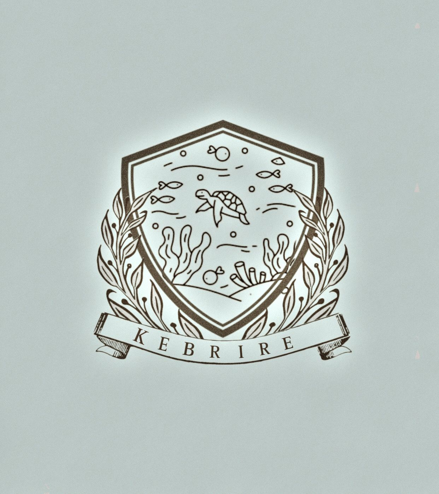

SDGs
let me introduce myself,hi everyone! my name is kesya nurmayla from X-G class. Tujuan Pembangunan Berkelanjutan (TPB)/Sustainable Development Goals (SDGs) adalah pembangunan yang menjaga peningkatan kesejahteraan ekonomi masyarakat secara berkesinambungan, pembangunan yang menjaga keberlanjutan kehidupan sosial masyarakat, pembangunan yang menjaga kualitas lingkungan hidup serta pembangunan yang menjamin keadilan dan terlaksananya tata kelola yang mampu menjaga peningkatan kualitas hidup dari satu generasi ke generasi berikutnya. TPB/SDGs merupakan komitmen global dan nasional dalam upaya untuk menyejahterakan masyarakat mencakup 17 tujuan yaitu (1) Tanpa Kemiskinan; (2) Tanpa Kelaparan; (3) Kehidupan Sehat dan Sejahtera; (4) Pendidikan Berkualitas; (5) Kesetaraan Gender; (6) Air Bersih dan Sanitasi Layak; (7) Energi Bersih dan Terjangkau; (8) Pekerjaan Layak dan Pertumbuhan Ekonomi; (9) Industri, Inovasi dan Infrastruktur; (10) Berkurangnya Kesenjangan; (11) Kota dan Permukiman yang Berkelanjutan; (12) Konsumsi dan Produksi yang Bertanggung Jawab; (13) Penanganan Perubahan Iklim; (14) Ekosistem Lautan; (15) Ekosistem Daratan; (16) Perdamaian, Keadilan dan Kelembagaan yang Tangguh; (17) Kemitraan untuk Mencapai Tujuan. dari 17 tema yang ada, topik yang kelompokku ambil adalah mengenai ekosistem laut.<3.
LIFE BELOW WATER
Tujuan Pembangunan Berkelanjutan 14 (Tujuan 14 atau SDG 14) adalah tentang "Kehidupan di bawah air" dan merupakan salah satu dari 17 Tujuan Pembangunan Berkelanjutan yang ditetapkan oleh Perserikatan Bangsa-Bangsa pada tahun 2015. Kata-kata resminya adalah "Melestarikan dan memanfaatkan samudra, laut, dan sumber daya laut secara berkelanjutan untuk pembangunan berkelanjutan.Tujuan ini memiliki sepuluh target yang harus dicapai pada tahun 2030. Kemajuan menuju setiap target diukur dengan satu indikator.Tujuh target pertama adalah target hasil: Mengurangi polusi laut; melindungi dan memulihkan ekosistem; mengurangi pengasaman laut; penangkapan ikan yang berkelanjutan; melestarikan wilayah pesisir dan laut; mengakhiri subsidi yang berkontribusi pada penangkapan ikan berlebihan; meningkatkan manfaat ekonomi dari penggunaan sumber daya laut yang berkelanjutan. Tiga target terakhir adalah target implementasi: Meningkatkan pengetahuan ilmiah, penelitian, dan teknologi untuk kesehatan laut; mendukung nelayan skala kecil; menerapkan dan menegakkan hukum laut internasional. Salah satu indikator di bawah Tujuan 14 secara khusus berkaitan dengan pengurangan dampak dari polusi plastik laut.
LOGO DAN FILOSOFI KELOMPOK
Nama kelompok kami KEBRIRE. KEBRIRE itu kepanjangan nya apasih? nahh jadi buat kalian yang penasaran KEBRIRE itu merupakan gabungan dari nama depan setiap anggota tim kami, KE for Kesya, B for Bintang, RI for Rifkyan, dan RE for Ressya. so next lets talk about our logo, jadi logo kami ini terdiri dari gambar perisai dan didalam nya ada ilustrasi kehidupan laut. what is that mean? jadi gambar ilustrasi kehidupan bawah laut tersebut menunjukan keindahan laut dengan berbagai macam spesies atau biota laut yang hidup didalamnya, sedangkan makna perisai adalah sebagai pertahanan agar keindahan dilaut tersebut tidak punah ataupun rusak akibat ulah manusia. so the point is, makna dari logo kita itu mengartikan bahwa kita sebagai manusia harus melindungi laut serta kehidupan didalamnya agar berbagai makhluk hidup yang tinggal didalamnya tidak punah,rusak,maupun tercemar.
